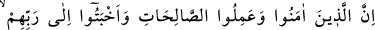
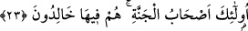
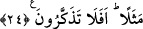

böyle davranışlar içine girmez. Dünyayı ve dünya liderliğini istemedikleri için onlara
Allah yolundan sapma (dalâlet) azâbı ve peşlerinden başkalarını da götürmek
istedikleri için de müridleri Hakk’ın yolundan saptırma azâbı vardır. Onlar kendi
uğradıkları ziyandan, peşlerinden gidenleri uğrattıkları ziyandan ve en çok ziyan eden
kişiler oldukları halde güzel bir şey yaptıklarını sanmalarından da hesaba
çekileceklerdir.
Ey bedevî, korkarım ki Kâbe’ye erişemezsin
Zira gittiğin bu yol Türkistan’a çıkar
23. Îman edip iyi işler yapan ve Rab’lerine gönülden boyun eğenlere gelince, işte
onlar cennet ehlidir. Onlar orada sürekli kalacaklardır.
İnanılması gereken her şeye “îman edip” gerek kendi aralarında, gerekse Rableriyle
ilişkilerinde “iyi işler yapan ve Rablerine gönülden boyun eğenlere” Allah’ta huzûr
ve sükûn bulanlara, her şeyden kopup huşû ve tevâzu ile O’na kulluk edenlere “gelince
işte onlar” yani bu sıfatlara sâhip olanlar “cennet ehlidir. Onlar orada sürekli” olarak
“kalacaklardır.” En iyisini Allah bilir ama cennette sürekli kalmanın sadece özellikleri
belirtilen bu kişilere mahsus olmadığına işâret etmek için, burada fasl zamiri
getirilmemiştir. Çünkü ehl-i sünnet’e göre bir mü’min sâlih amel işlemese bile sonunda
cennette dâimî olarak kalacaktır. Müfti Sa‘dî’nin Hâşiye’sinde de böyle geçmektedir.
et-Te’vîlâtü’n-Necmiyye’de şöyle denilir: Allah’ı taleb ederek “îman edip” matlûba
ulaşmak, faydalı şeyleri taleb etmek için sâlih ameller işleyenler ve tamamen Rablerine
dönenler ve Rablerinden sadece kendisini isteyip O’nunla mutmain olanlar “işte onlar
cennet ehlidir.” Cennetin sahipleridir. Onlar cenneti isteyen değil, cennetin kendilerini
istediği kimselerdir. Onlar sadece Allah’ı isterler. Onlar orada bu istek üzere ebedî
olarak kalacaklardır.
24. Bu iki zümrenin durumu, kör ve sağır ile gören ve işiten gibidir. Bunlar hiç eşit
olur mu?! Hâlâ ibret almıyor musunuz?
“Bu iki zümrenin durumu” yani mü’min ile kâfirin şaşılacak halleri…